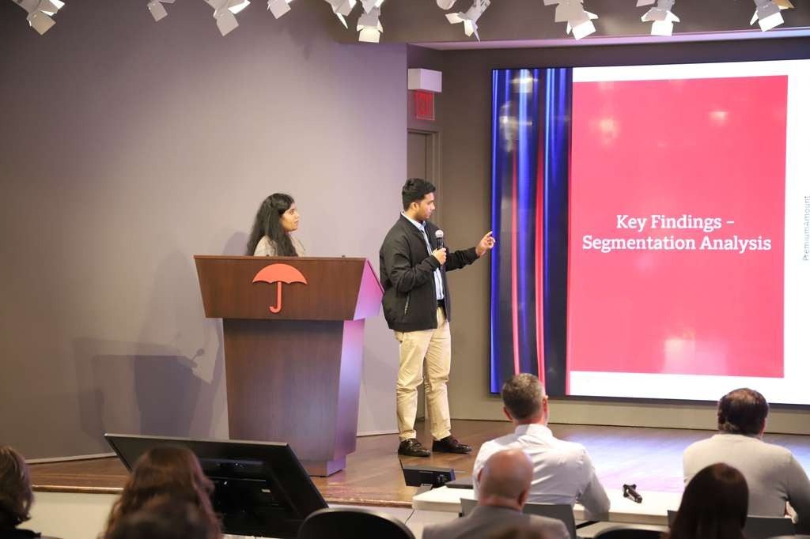
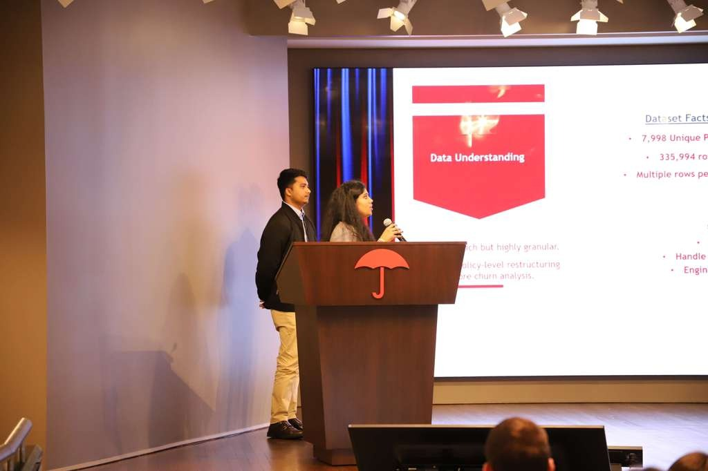

Travelers BI&A LDP Case Competition
Predicting commercial auto policy churn from real-world insurance data — a machine learning case study.
I represented Team 1 from UConn in the Travelers BI&A LDP Case Competition, where we tackled a real-world policy churn prediction problem using actual insurance data.
This one meant a lot to me. At one point I honestly wondered if I was ready for something at this level — but I chose to push through that fear, show up, and give it my best. Sometimes the opportunities we feel least ready for become the ones that help us grow the most. I walked away with more confidence, stronger analytical thinking, and even more excitement for the road ahead in data and business analytics.
Huge thanks to Travelers for creating such a meaningful platform for students to work on a real business problem — and to my teammates for the collaboration, brainstorming, and teamwork throughout. This was truly a team effort.
2026 · Team 1, University of Connecticut School of Business
Policy Churn Prediction
Business Analytics · Machine Learning2026 · Travelers × UConn School of Business
CHALLENGE
Using real, messy commercial insurance data, identify which policies are likely to churn — and explain what drives that churn — so the business can act early. The raw data wasn't policy-level and had no reliable cancellation field to learn from.
SOLUTION
Reshaped 335,994 raw rows into a clean, policy-level dataset, engineered a practical churn definition and business features, then compared multiple machine learning models and tuned the best one for stronger recall.
RESULTS
Gradient Boosting delivered the strongest performance (AUC 0.906, 94.4% accuracy). We showed churn is not random — it's strongly linked to pricing, business maturity, vehicle profile, coverage complexity, and geography.
TOOLS
How we approached it
From raw records to a business-ready churn model, step by step.
STEP 01 · DATA RESHAPING
From records to policies
The raw file had 335,994 rows but only 7,998 unique policy numbers — one policy appeared
many times. We aggregated every row by PolicyNumber into a single row per
policy, preventing double counting and making the analysis business-meaningful.
STEP 02 · DEFINING CHURN
A practical churn proxy
The cancellation field wasn't usable (its 1800-01-01 placeholder just meant
"no date"), so we built our own definition: a policy churned when it ended earlier than
expected — PolicyTermDate < PolicyExpDate. That gave us a workable
target: 1,015 churned vs 6,983 retained (~12.7%).
STEP 03 · DATA QUALITY
Handling missing data
We audited missingness before modeling:
- High: CoverageDeductible, BusinessUse, EstablishYear
- Moderate: VehicleType, VehicleValue, VehicleAge, BillingFrequency
STEP 04 · FEATURE ENGINEERING
Business-level features
We created features that reflect real business behavior:
- Premium per vehicle
- Business age at policy effective date
- Unique vehicle count (from VINs)
- Coverage complexity (unique coverage codes)
STEP 05 · MODELING
Comparing models
We tested Logistic Regression, Random Forest, and Gradient Boosting on the imbalanced (12.7% churn) dataset. Gradient Boosting came out clearly ahead on overall performance.
STEP 06 · THRESHOLD TUNING
Catching more churners
The default 0.50 threshold was too conservative and missed churners. Lowering it to 0.45 lifted recall while keeping precision strong — a better trade-off for a business that wants to catch at-risk policies early.
Model performance
Gradient Boosting was our best model, before and after threshold tuning.
| Gradient Boosting | AUC | Accuracy | Precision | Recall | F1 |
|---|---|---|---|---|---|
| Default (0.50 threshold) | 0.906 | 0.944 | 0.905 | 0.626 | — |
| Tuned (0.45 threshold) · best | 0.906 | 0.944 | 0.877 | 0.652 | 0.748 |
Compared against Logistic Regression and Random Forest; Gradient Boosting had the best overall performance. Tuning traded a little precision for higher recall — better for flagging at-risk policies.
What drives churn
The strongest predictive signals from the model — churn is not random.
Competition moments
Photos from the competition.

